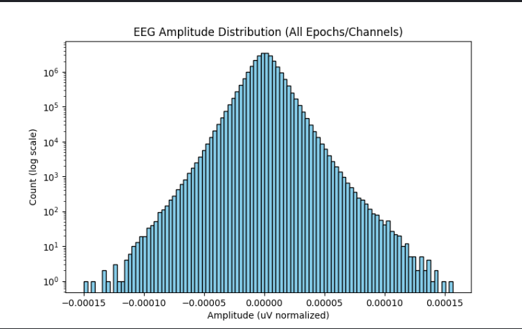
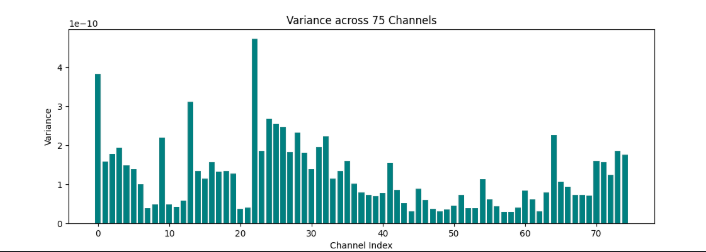
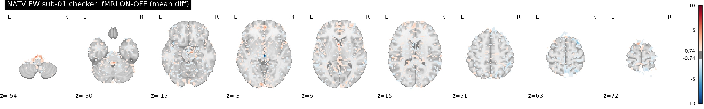
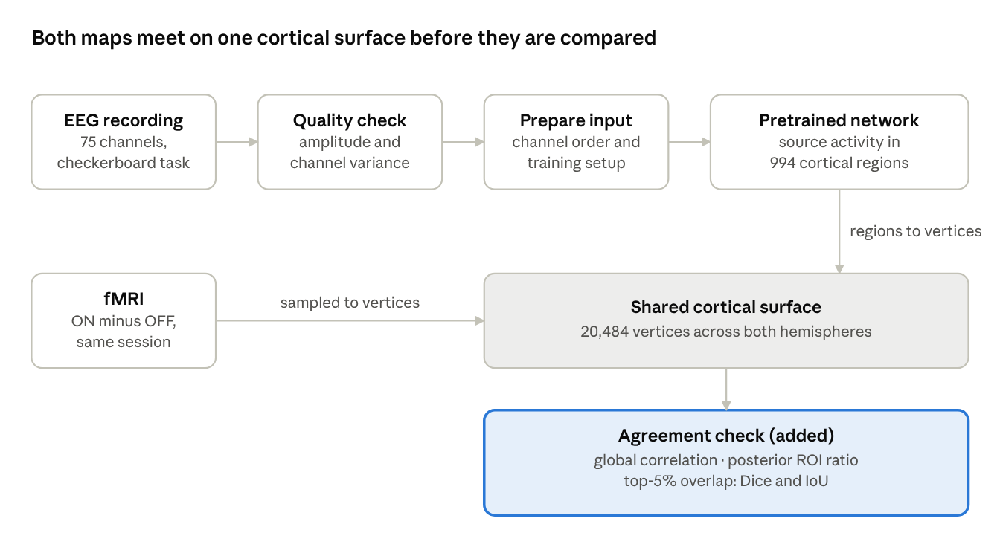

Project · Neural signals
EEG Source Imaging Checked Against fMRI
A pretrained deep-learning model estimates where on the cortex EEG activity comes from. How far is its output from an independent modality, on real data, out of the box?
A published, pretrained source-imaging network run on public EEG recorded together with fMRI. The model is not mine. The goal was to learn the full path from raw neural signals to a cortical map.
The EEG estimate and the fMRI activation map are placed on the same cortical surface and compared with three simple measures, so the EEG result is judged against an independent modality rather than by eye.
The two maps did not agree, and neither concentrated clearly at the back of the brain. Since the fMRI reference was itself weak, the cause is still open.
Data and quality checks
The data come from NATVIEW, a public dataset of simultaneous EEG and fMRI. I used one subject's checkerboard session: a flickering checkerboard switched on and off, which should drive the visual cortex at the back of the brain. That gives a known target to check against.
- EEG: 75 channels, cut into epochs around the stimulus.
- fMRI: the ON-minus-OFF difference map from the same session.
Before running the model I checked the EEG itself: the amplitude distribution across all epochs and channels, and the variance of each channel, to find flat, noisy, or outlying channels. The fMRI difference map was checked slice by slice.



Pipeline
The top row is the reproduction. The EEG is checked, prepared to match the setup the network was trained on, and passed through the pretrained network. The bottom half is the part I added, which brings both modalities to one surface and measures how well they agree.

Preparing the input. A pretrained network expects channels in the order, and with the preprocessing, it was trained with. The recording's montage had to be re-ordered and preprocessed to match before the output meant anything.
The agreement check uses three measures because each answers a different question:
- Global correlation across all surface points: do the two maps rise and fall together?
- Posterior ROI ratio: mean absolute activity at the back of the brain (y < −50 mm) relative to the whole brain. Above 1 means activity leans posterior, which is what a visual stimulus should produce.
- Top-5% overlap: Dice and IoU between the most active 5% of points in each map. Do the hot spots land in the same places?
Results
The two maps did not agree, globally or at their peaks.
| Measure | EEG source | fMRI |
|---|---|---|
| Posterior ROI ratio (y < −50 mm) | 1.05 | 1.10 |
| Agreement between maps | Value |
|---|---|
| Global Pearson correlation | −0.01 |
| Top-5% overlap, Dice (chance: 0.05) | 0.04 |
| Top-5% overlap, IoU | 0.02 |

The correlation is essentially zero, and the overlap of the strongest 5% of points is at or below what random placement would give. Neither map is strongly concentrated at the back of the brain: the fMRI ratio rises only slightly toward the occipital pole, which is weak for a full-field checkerboard, and the EEG ratio does not rise.
Why the maps might disagree
This result does not by itself show that the model fails on real visual data. Several parts of the pipeline could produce the same disagreement, and I have not yet separated them:
- A weak fMRI reference. A raw ON-minus-OFF difference ignores the hemodynamic delay and does not model noise or motion. Its weak posterior ratio suggests it does not cleanly show visual cortex.
- A steady-state stimulus. The 12 Hz flicker drives a response at the flicker frequency. Averaging over the whole stimulus period, rather than looking at the 12 Hz component, may wash it out.
- In-scanner EEG artifacts. Gradient and cardiac residuals are large compared with visual responses.
- Input mismatch with the model. Units, scaling, and the mapping onto the model's 75-channel layout need to be checked against what the network was trained on.
- Template anatomy. Both maps sit on a template surface, not the subject's own cortex.
Next steps, each chosen to rule causes in or out rather than to make the maps agree: confirm a 12 Hz peak at occipital channels in and out of the scanner; build a proper fMRI reference with a general linear model; run a classical inverse method on the same data as a baseline; replace the analytic chance level with a spin test; and repeat on more subjects.
Limitations. One subject, template anatomy, and a simple fMRI reference. The network was used as released, not tuned, so the numbers describe an off-the-shelf reproduction rather than an evaluation of the model.